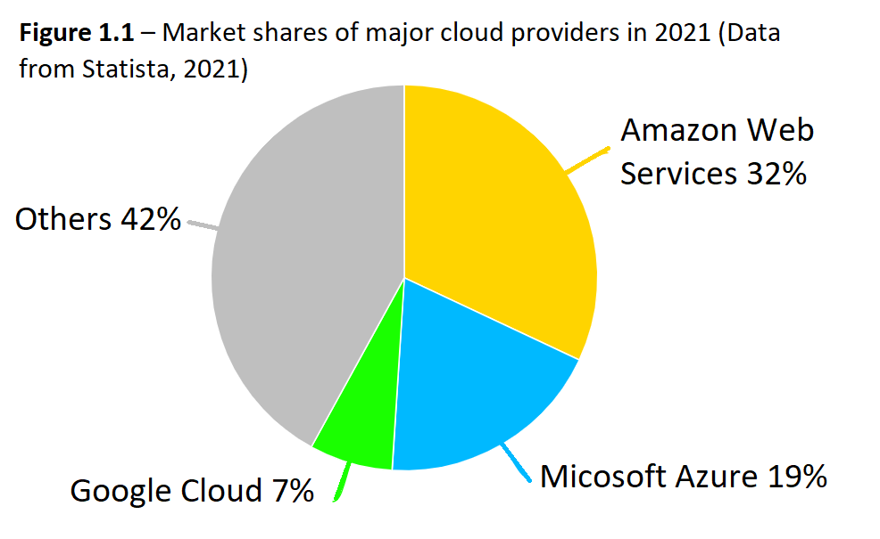
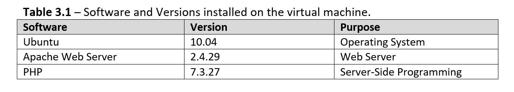
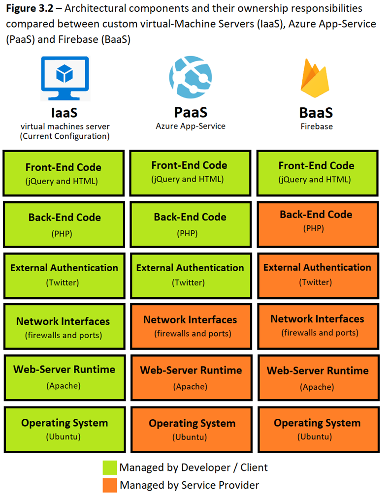
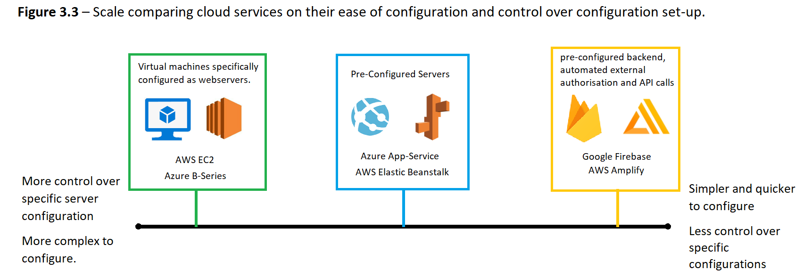
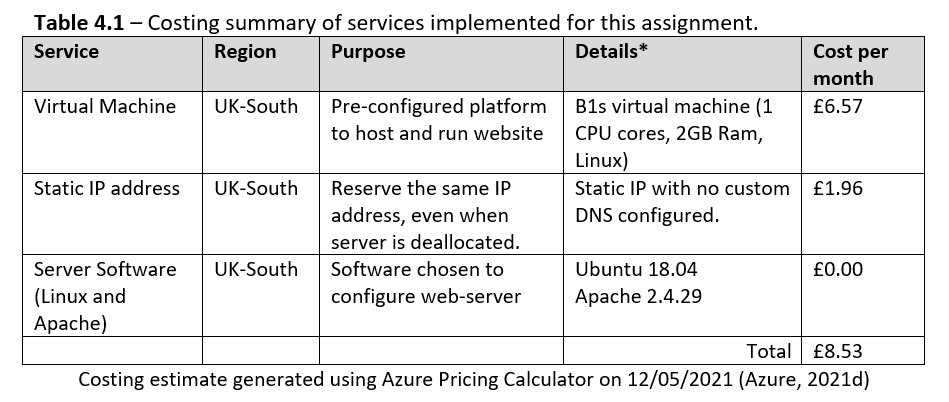
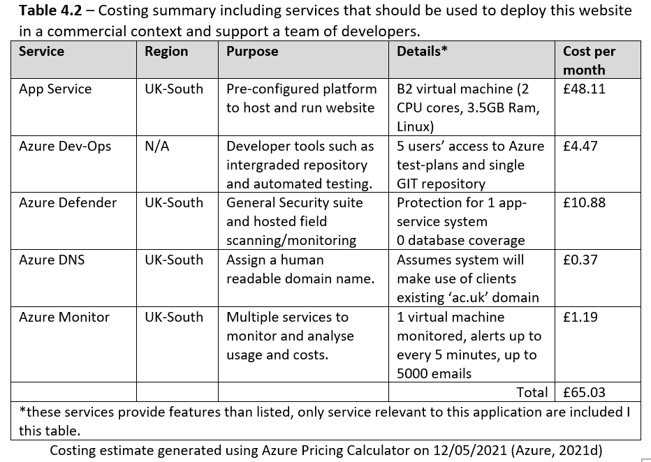
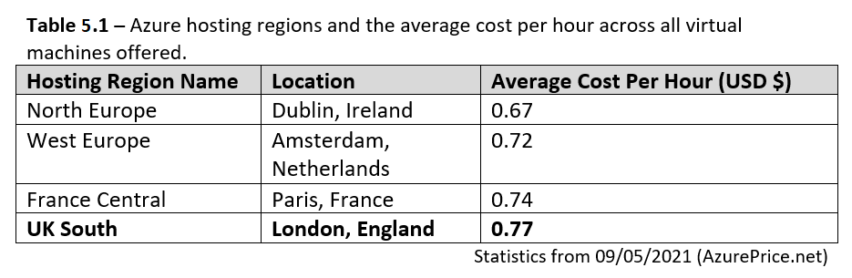
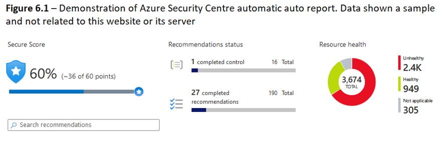

This system implements Azure, this was chosen over Amazon-Web-Services (AWS), although both provide suitable tools to create this website, AWS has a larger market share and more users, figure 1.1. As such there is a larger online community and existing documentation that supported development.
However, Azure is already used by the client (Northumbria University) on many existing systems, and by combining this system into the client’s Azure subscription, bundling deals would reduce the ongoing cost (Azure, 2020a). Additionally, staff employed to manage Azure systems would not have to re-train for AWS.
The client makes use of Azures Active-Directory (Azure, 2019a) to store student and staff data, along with other user-specific data such as timetabling information. AWS’ “Single Sign-On” service would allow access to the existing Azure Active-Directory from an AWS system (AWS, 2019a), however, native Azure services allow for significantly less complex access, that would be easier to maintain.
By implementing Azure, this data could be accessed easily within the client’s subscription, allowing future expansion of the system enabling a user to login with their Northumbria account and access data such as student timetables, class locations and other data specific to the user, providing developers more data to create more useful features.
This website uses an Azure B1s virtual-machine (Azure, 2017), this was configured with Apache as a web-server. This B1s is low-cost and powerful enough to run a basic webserver for this system as this website “offloads” computationally expensive tasks such as route-calculating to external APIs (Lin et al, 2019). Furthermore, the B-series virtual-machines can “scale-up” their compute performance to accommodate large, unexpected spikes in users without overwhelming the server.
Using a virtual-machine meant that File-Zilla and SSH (Secure Shell) had to be used to manually deploy code. This allows for discrepancies between the Git-repository used during development, and code on the server. Dearle (2007) highlights this inconsistency between environments as difficult to maintain, and a likely cause of “last-minute” deployment bugs.
Azure Dev-Ops provides services allowing Git-repository to be directly linked to the deployment server (Azure, 2020b), simplifying management of deployed files, and allowing roll-backs if any issues are found, addressing concerns from Dearle (2007). This can be used in conjunction with Northumbria’s existing Azure Active-Directory, to control who can access source code (Azure, 2021b).
Robustness of code can be further ensured by implementing Azure test-plans (Azure, 2019b), a service that can automatically generate and preform tests, while providing detailed analysis on errors, and potential causes.
Additionally, as file transfers between the repository and the server are internal, SSH port 22 can be permanently closed on the server, removing a potential access point for attackers.
If more funding were available, Dev-Ops services could have been used to create a more fluid development environment where code would be easier to maintain and increase security.
An IaaS (infrastructure as a service) architecture has been used with a B1s virtual-machine configured with a slightly modified “LAMP” stack, shown in table 3.1. As stated in the original specification, SQLite was chosen as the database engine, however as it was not required, it has not been installed.
Manually configuring the virtual-machine has allowed complete control over the server and any software needed. However, this resulted in extra work to configure and manage the server.
Chilberto et al (2020, p.157) discuss that websites such has this, that make use of common backend technology stacks, a more automated PaaS (Platform as a service) such as Azure App-Service (Azure, 2021c) or AWS Elastic-Beanstalk (AWS, 2021a) would have been more suitable.
The use of App-Service automatically configures systems such as databases and network interfaces, reducing responsibility on the system owner to set-up and maintain these manually. However, providing less control over the server configuration, meaning it may not be suitable for specialised systems.
This abstraction of low-level systems could be taken a step further by implementing a complete BaaS (backend as a service), such as Google Firebase and AWS Amplify. This would have suited this website extremely well, as authentication with third party apps such as Twitter could be achieved automatically (Kumar, 2018, p.77), allowing development to focus only on front-end components. figure 3.2 shows a comparison.
Manually configuring a virtual-machine has allowed control over the setup of the server but requiring extra time. The use of PaaS would have allowed server configuration to be managed automatically by the cloud-provider for a higher fee. BaaS would simplify development further, completely removing the need for server setups and backend code.
As an Azure student subscription was used for this assignment, care has been taken to ensure the cost was low, allowing credits to last throughout the module. This has meant that only the minimum cloud-services required to meet the specification have been used. Table 4.1 shows costs for services being used.
This budget has enabled the system to meet its requirements while staying within the allotted student-credits, however in a commercial context these choices are not ideal. The small b1s virtual machine may struggle to handle heavy traffic, and the deployment of code using SSH has made version-control difficult.
Table 4.2 presents a revised costing, making use of recommended services.
Services such as Azure-Defender and a custom domain have been included, to ensure the system is suitable and secured for public use. However, most of the increased cost contributes to simplifying development and deployment of code.
As discussed in section 3, App-Service has been chosen to reduce time configuring and maintaining a server, and Dev-Ops suite has been included allowing for simpler management of deployed code.
This slightly higher budget may not directly increase the quality of the system from user perspective. However, Thomas and Hunt, (2019) discuss that streamlining workflows with automated testing and deployment strategies will allow more time to be spent on development of extra features. Hence the higher budget is an investment that will benefit developers, and as a result a more feature rich product can be produced, providing a more complete user experience.
The system is hosted in London, as almost all users are expected to be from the North-East of England. In line with best practice guides provided by Google Cloud (2021), UK-South (London) is the closest location geographically and will reduce latency when using the app as less networking infrastructure is required to get data from London to Newcastle.
Additionally, this complies with “data-sovereignty” required from the Data Protection Act (2018) stating that data pertaining to an individual must be stored within the European Union.
The system makes use of PHP sessions to store users’ Twitter authentication data on the server VM. As this twitter data contains a user’s name, the data protection act states it must be kept within the EU, not just the UK. Azure offers multiple locations within the EU that are geographically close to Newcastle with lower costs than UK-South, as shown in table 4.1.
Hosting in Dublin could reduce costs while still being geographically near Newcastle. However, the UK-EU trade operations agreement allows the flow of data between the UK and EU until 31st of December 2021 at least, with no legislation being finalised for after this period (European Commission, 2020). Revised legislation brings the possibility that all data from the UK may have to stay within the UK and not just the EU.
The owner of the deployed system must decide if the cost savings from hosting in Dublin are worth the “cumbersome, and sometimes costly” (Google Cloud, 2021) task of migrating datacentre if legislation after December 2021 requires it.
Azure-Firewall has been used to control external access to the virtual-machine (Azure, 2021f). This has allowed SSH access to be protected with key-pairs, instead of passwords, following recommendations from Owens and Matthews (2008). Although access to port-22 (SSH) is protected, it was still open during development, this is a key concern as if an attacker gained access, they would have root control over the virtual-machine.
Azure Security-Centre (Azure, 2021e) is included as a free service with an Azure subscription. The free-tier provides automatic security audits for a single virtual-machine, highlighting vulnerabilities providing recommendations for improvement (Figure 6.1). This was ideal for this application, as the whole system could be monitored, there would be little need to upgrade this unless more virtual-machines were added.
In addition to firewall and port settings, Apache and PHP have been configured in a secure way, with error messages being disabled and sensitive directories, such as those containing API access tokens have been protected with .htaccess files to forbid access over HTTP.
Current security measures are suitable for the system in its current state, as there are no databases, or stores of sensitive ‘special category data’ (Data Protection Act, 2018). However, as much of the current measures have had to be manually configured, the possibility of human-error is introduced, which is presented by Boyce et al (2011) to be a main cause of cyber-security flaws.
As discussed throughout this report, a more abstracted PaaS cloud service such as AWS Elastic-Beanstalk or Azure App-Service would automate much of this configuration, reducing the possibility of human-error.
Additionally, within the Azure-suite, Azure-defender can integrate tightly with the App-Service backend, allowing security measures to be adjusted in response to detected threats such as anomalous login attempts, ensuring security measures are always up to date and relevant to expected threats (Azure, 2020c).
Current measures provide suitable protection within the scope of this project, however if the system were to be deployed alongside multiple other virtual-machines, the automated security provided by PaaS would reduce time to manually set-up security measures and reduce human error. As making use of services such as Azure-Defender would only have a marginal increase in cost (shown in table 4.2) they would be more suitable in commercial context than the manually configured security measures used.